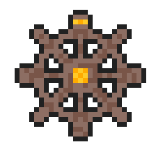
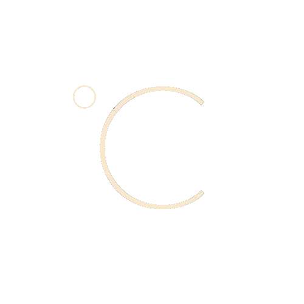

Hey, I am a University of Maryland Alum w a B.sc in Computer Science.
At UMD, I studied a wide range of programming languages and principles,
as I went for a general specialization. I covered the OOP languages like Java,
scripting languages like Python and Ruby, lower-end languages like C where I did assembly, and even functional languages like OCaml and Racket.
However, I also tried to focus more on the programming and creating software aspect of computer science,
so I learned about Game development and Android development, and my current focus is on web development.
I started web development in the summer of 2021 as a side project and practicing for my class, and I quickly grew to like the field.
I've been working on projects to learn more about this discipline.
Projects
These are some of the projects I worked on over the course of getting my degree.
Some of these projects were done in a classroom settings, however, all my web development
projects were done during my personal time and interest in the field.
Context-Aware-Ringer
This was an android project I worked on in the past semester amongst a group of 3 other students. As the name might suggest, the application was meant to detect location changes and update your phones
ringer settings (if you had settings for a particular location) or use some default settings for new locations. I worked on creating the layout and code for most of this apps views of which there were 5, and
the transition between views all written in Kotlin. I also worked on setting up authentication and cloud storage using Google's firebase.

Pirate Bounty
My first group project where we had to create a game using Unity. Our team decided to work on a pirate, rogue-like game where you travel the seas in a ship and encounter other enemy ships
which you have to fend off. Each ship killed grants some gold allowing you to upgrade your ship to face more enemies in the other levels. I worked on the sound, as well as, the enemy designs and
movement for this game which was all done in C#.

Simple Weather
This was the first interactive website I designed using JavaScript and two weather APIs: OpenWeather and Accuweather. The website features a card display of
the last searched weather (default to Tokyo if no last searched weather) and a search box which users can input a weather location to be searched. There is a display of the current weather,
and wind conditions, as well as, a weather forecast of the next five hours.
The Button
The button is the latest site I created using Node.js and Express.js. It's a simple game where you click a button with a random quote generator inspiring you to click the button.
When you're done clicking the button, it stores your current clicks and shows the total number of times you've clicked the button retrieving any potential previous data. The button also feature a score
page that shows the names of every clicker and the number of times they have clicked the button. Clickers share the same name so the clicks of everyone who shares a name is aggregated.